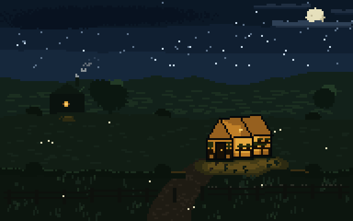

Art
greenhouse light#

overworld#
seaside#
highland#
night circuit#
how it works#
Every picture here is a grid of numbers in the source. Each number picks a colour from a palette, so the map below is the whole artwork: no image file, and one number changed is one cell changed.
The drawing itself is deliberately dumb: a canvas the size of the grid, one filled rectangle per cell, scaled up by CSS with image-rendering set to pixelated so the cells stay sharp. The home page meadow is 144 by 60 cells, drawn exactly this way.
Night is the same numbers, a different palette. The map never changes; the lookup does.
Motion is timers and swaps, never movement. A gust steps row by row, swapping each grass cell one shade up as it passes, then back down behind it. The clouds are a second map over the sky cells only, stepping one whole column at a time.
All the variation is seeded, so the same code draws the same picture every time. That makes the work checkable: count a frame's colours against the palette, or diff two versions cell by cell.
If your system asks for reduced motion, the timers never start and you get one static frame.
The same map again, built the way the bigger pieces get built: in steps, each step swapping whole cells, and nothing moves.
- The grid of numbers. The picture is text before it is pixels.
- The palette lookup. Each number swaps for its colour.
- Clusters and ramps. Lit and shadow faces land, two or three shades to a thing.
- Layers, back to front. Sky, then ground, then the tree.
- Dither, as seasoning. A few sky cells swap to the shade next door.
- The light story. One accent lights last; everything else stays quiet.
And some of the code itself: a corner of the palette, and the whole renderer. It cannot do anything clever. It looks each key up and fills one square.
const PROCESS_COLOURS = {
light: {
...LAB_COLOURS.light,
"L+": "#74b95c", // lit leaves
"L-": "#3e7c37", // shadow leaves
"C-": "#cfe3f2", // the cloud's underside
"h+": "#bce0ac", // the hill's lit rim
"h-": "#8fbc7d", // the hill's base
".d": "#9fd0ef", // sky, one shade over, for the dither step
"S!": "#ffab2e", // the one accent, lit at the end
},
// dark: the same keys, remapped
};
function paint() {
const frame = frames[current];
const colours = frame.shades[resolvedTheme()];
frame.grid.forEach((row, y) => {
row.forEach((key, x) => {
ctx.fillStyle = colours[key];
ctx.fillRect(x, y, 1, 1);
});
});
}
That is the whole machine. Steal it.
The instructions I work from are in this repo, unedited: the skill, the anchor template, the critique checklist, and the site palette.